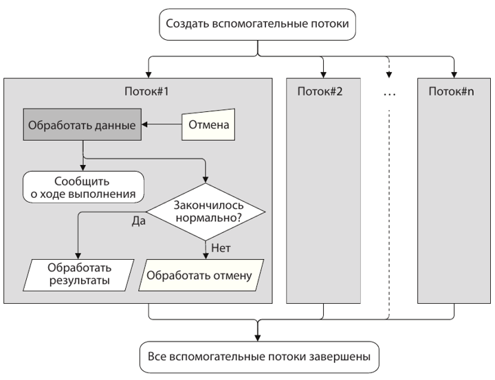
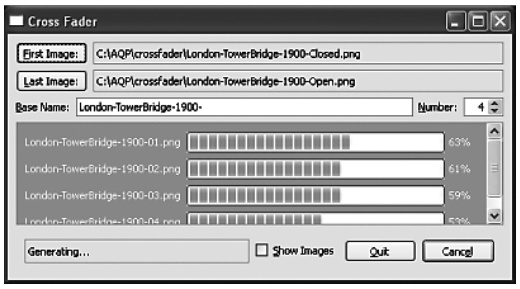

Многопоточное программирование с классом QThread
Здесь будет рассмотрено:
В этой главе мы рассмотрим класс QThread, который обеспечивает точ-
ный контроль над многопоточной обработкой в сочетании с поддерж-
кой механизма сигналов и слотов. Как и в предыдущей главе, предпо-
лагается знакомство с основами многопоточного программирования
в целом и в Qt в частности. Предполагается также, что вы прочитали
хотя бы начало предыдущей главы.
Если имеется сравнительно немного объектов (или небольших групп
объектов), которые надо обработать в фоновом режиме, получая инфор-
мацию о ходе выполнения и о завершении обработки, то часто опти-
мальным решением оказывается создание подкласса класса QThread.
Класс QThread Qt (как и QRunnable) был спроектирован по образцу класса
Thread в языке Java и имеет сходные с ним черты – например, в любом
его подклассе должен быть реализован метод run(), а запуск потока осу-
ществляется методом start().
Основное различие между классами QThread и QRunnable заключается
в том, что QThread – подкласс QObject, поэтому для слежения за ходом
выполнения можно использовать сигналы и слоты. И сам класс QThread
предоставляет ряд полезных сигналов и слотов, к которым можно под-
ключаться. На рис. 8.1 схематически изображен порядок создания
и использования нескольких экземпляров подкласса QThread.
В этой главе мы рассмотрим два разных приложения с использовани-
ем класса QThread: в одном вспомогательные потоки используются для
обработки независимых элементов, поэтому синхронизация доступа не
нужна; в другом заполняется разделяемая структура данных и, зна-
чит, для обеспечения безопасного доступа необходима синхронизация.

Использование класса QThread для обработки данных
Обработка независимых элементов
В этом разделе мы рассмотрим приложение Cross Fader (crossfader), по-
казанное на рис. 8.2. Пользователь может выбрать два изображения
и задать количество промежуточных изображений, а программа по-
строит указанное количество изображений для осуществления посте-
пенного перехода между крайними. Например, если пользователь за-
кажет три промежуточных изображения, то в результате получит по-
следовательность из пяти изображений, в которых пропорциональные
доли первого и второго изображения меняются следующим образом:
начальное изображение (100:0), первое микшированное изображение
(75:25), второе микшированное изображение (50:50), третье микширо-
ванное изображение (25:75), конечное изображение (0:100).
Эффект плавного микширования цвета с четырьмя промежуточными
изображениями показан на снимке экрана на рис. 8.2, а получившиеся
в результате изображения – на рис. 8.3; доли начального и конечного
изображений меняются следующим образом: (100:0), (80:20), (60:40),
(40:60), (20:80), (0:100).

Приложение Cross Fader
Шесть изображений, из которых четыре микшированных
В приложении Cross Fader для создания каждого микшированного изо-
бражения используется свой экземпляр подкласса QThread. Это разум
но, потому что программа ограничивает количество промежуточных
изображений. Кроме того, поскольку обработка производится незави-
симо, то синхронизация не нужна. Если бы нужно было параллельно
создавать много изображений, то, наверное, было бы лучше использо-
вать несколько рабочих потоков и разделяемую между ними очередь;
такой подход мы применим в следующем разделе.
Приложение создает также виджеты QLabel и QProgressBar для каждо-
го микшированного изображения, чтобы пользователь мог следить за
ходом работы. Но число промежуточных изображений заранее не из-
вестно (оно задается с помощью счетчика с максимальным значени-
ем 14), и мы создаем столько потоков, меток и индикаторов, сколько
изображений закажет пользователь. Поэтому все метки и индикаторы
размещены внутри области QScrollArea, чтобы при необходимости появ-
лялась вертикальная полоса прокрутки.
Мы решили ограничиться одной кнопкой для запуска и отмены гене-
рации изображений и в зависимости от ситуации выводить на ней над-
пись Generate (Генерировать) или Cancel (Отмена). Кроме того, если отме-
чен флажок Show Images (Показать изображения), то после создания всех
изображений мы показываем их в системной программе просмотра изо-
бражений (если таковая имеется).
Как и в предыдущей главе, мы сначала опишем базовую инфраструкту-
ру, чтобы было понятно, о чем речь, а потом перейдем к коду, относяще-
муся к многопоточной обработке, – в данном случае подклассу CrossFader
класса QThread, который применяется для создания микшированных
изображений.
Сначала покажем перечисление и несколько закрытых членов класса
MainWindow.
enum StopState {Stopping, Terminating};
QWidget *progressWidget;
QMap<QString, QPointer<QProgressBar> > progressBarForFilename;
QList<QPointer<QLabel> > progressLabels;
QList<QPointer<CrossFader> > crossFaders;
bool canceled;
Перечисление StopState различает причины завершения приложения:
из-за прерывания пользователем или естественное. Почему это так
важно, мы увидим при рассмотрении метода cleanUp().
Виджет progressWidget помещен внутрь QScrollArea и содержит компо-
новщик QGridLayout. Когда пользователь запускает генерацию изобра-
жений, мы создаем новый набор меток и индикаторов и размещаем их
внутри компоновщика. Указатели на индикаторы хранятся в объекте
QMap; ключом является имя графического файла, построение которого
отображает индикатор.
Вместо обычных указателей на изображения мы используем защи-
щенные указатели (guarded pointer) QPointer, которые автоматически
принимают значение null, когда объект, на который они указывают,
удаляется. Как и все прочие интеллектуальные указатели, QPointer об-
ходится чуть дороже обычного указателя – он потребляет больше памя-
ти, а доступ через него несколько медленнее. Но все затраты окупаются
удобством проверки в ситуации, когда мы хотим обращаться к объек-
ту только в том случае, если он не удален. (Другие интеллектуальные
указатели, имеющиеся в Qt, были описаны во врезке «Интеллектуаль-
ные указатели в Qt» на стр. 78.)
Класс QWeakPointer, появившийся в версии Qt 4.6, можно использовать
как слабый указатель общего вида или, для подклассов QObject, как бо-
лее эффективную замену QPointer. Однако интерфейс класса QWeakPointer
отличается от API QPointer и не так удобен, поэтому здесь мы предпочи-
таем использовать QPointer, поскольку его относительная неэффектив-
ность теряется на фоне затрат на обработку изображений (и, стало быть,
несущественна). Кроме того, применение QPointer означает, что код бу-
дет компилироваться без изменений и в Qt 4.5, и в Qt 4.6.
Список микшеров crossFaders нужен для того, чтобы было проще про-
изводить различные действия сразу над всеми работающими вспомо-
гательными потоками, – например, останавливать их, когда пользо-
ватель прерывает генерацию. Зачем для хранения указателей на мик-
шеры используется класс QPointer, мы увидим, когда будем обсуждать
метод cleanUp(). Булевый флаг canceled введен только для нужд пользо-
вательского интерфейса, вспомогательные потоки к нему не обращают-
ся, поэтому добавлять модификатор volatile нет необходимости.
Кнопка Generate становится активна сразу после того, как пользователь
выберет оба изображения (благодаря соединениям сигналов со слота-
ми, которые мы опустили). При нажатии на эту кнопку вызывается
слот generateOrCancelImages() и начинается генерация.
void MainWindow::generateOrCancelImages()
{
if (generateOrCancelButton->text() == tr(“G&enerate”)) {
generateOrCancelButton->setEnabled(false);
statusBar->showMessage(tr(“Generating...”));
canceled = false;
cleanUp();
QImage firstImage(firstLabel->text());
QImage lastImage(lastLabel->text());
for (int i = 0; i < numberSpinBox->value(); ++i)
createAndRunACrossFader(i, firstImage, lastImage);
generateOrCancelButton->setText(tr(“Canc&el”));
}
else {
canceled = true;
cleanUp();
generateOrCancelButton->setText(tr(“G&enerate”));
}
updateUi();
}
Этот слот вызывается при нажатии кнопки generateOrCancelButton, но
его поведение зависит от того, используется эта кнопка для запуска или
прерывания генерации.
Если нажата кнопка Generate , то производятся различные действия,
относящиеся к интерфейсу, например изменение строки состояния,
и флаг canceled сбрасывается в false. Кроме того, мы вызываем метод
cleanUp(), чтобы гарантированно остановить все вспомогательные пото-
ки и удалить ранее созданные метки и индикаторы хода выполнения,
подготовившись тем самым к новому запуску.
Затем создается по одному объекту-микшеру для каждого промежуточ-
ного изображения, и надпись кнопки generateOrCancelButton меняется
на Cancel.
Если же нажата кнопка Cancel, то флагу canceled присваивается значе-
ние true, чтобы другие методы главного окна узнали о том, что генера-
ция была прервана. Затем мы производим очистку и превращаем кноп-
ку обратно в Generate.
В любом случае в заключение вызывается метод updateUi() (не показан);
он всего лишь активирует или деактивирует кнопку Generate в зависи-
мости от того, выбраны уже оба изображения или еще нет.
Как обычно, клавиши-акселераторы устанавливаются автоматически;
в данном случае функция AQP::accelerateWidget(this) вызывается в кон-
структоре после создания виджетов. Однако метод generateOrCancel
Images() должен знать, какая надпись в данный момент отображается на
кнопке Generate / Cancel, а мы не можем заранее сказать, куда AQP::accelerate
Widget() поставит амперсанд. Можно было бы перед сравнением с надпи-
сью на кнопке удалить амперсанд, например, так: generateOrCancelButton->
text().replace(“&”, “”) == tr(“Generate”). Но мы предпочли поставить ампер-
санды в обоих надписях, отображаемых на этой кнопке, вручную, чтобы
с ней была связана одна и та же клавиша-акселератор Alt + E вне зависимо-
сти от того, что отображается: Generate или Cancel. Функции accelerate*()
не изменяют заданные вручную клавиши-акселераторы. (Подробнее
о модуле alt_key.{hpp,cpp}, в котором находятся функции accelerate*(),
см. во врезке «Клавиши-акселераторы», стр. 30.)
Теперь пора рассмотреть метод cleanUp(). Он вызывается перед гене-
рацией нового набора изображений, в случае прерывания генерации
и при завершении программы. Для большей понятности мы разобьем
этот метод на две части. Сначала приведем наивную реализацию пер-
вой части, потом обсудим, какая в ней скрыта проблема, а затем пока-
жем корректную реализацию. А уж после этого перейдем ко второй ча-
сти, одинаковой в обоих случаях.
Первая часть метода cleanUp() связана с остановом работающих потоков
микширования. Сначала покажем наивную версию:
void MainWindow::cleanUp(StopState stopState)
{
foreach (CrossFader *crossFader, crossFaders) { // Наивно!
crossFader->stop();
crossFader->wait();
crossFader->deleteLater();
}
crossFaders.clear();
...
}
Это простейший подход. Мы обходим все объекты-микшеры и для
каждого вызываем метод CrossFader::stop(). Время на это практически
не тратится, так как единственное, что делает метод, – установка для
некоторой булевой переменной значения true. Затем вызывается метод
QThread::wait() – микшер знает, что должен остановиться, поэтому за-
вершится, как только дойдет до выражения if (m_stopped). Когда метод
QThread::wait() вернет управление, мы понимаем, что поток остановлен,
и просим его удалить себя. А в самом конце очищаем список crossFad-
ers, поскольку в данный момент в нем находятся висячие указатели.
Это решение настолько просто, что даже не нужны интеллектуаль-
ные указатели QPointer на объекты CrossFader, достаточно и обычных.
Но у него есть один потенциальный недостаток: мы ждем завершения
потоков по очереди, и значит, общее время ожидания составит сумму
времен, необходимых для завершения каждого потока. Если мы готовы
применить более сложный алгоритм, то эту проблему можно устранить
и сократить время ожидания, сделав его почти равным времени завер-
шения самого медленного потока.
Конечно, ничего дурного в использовании простого подхода нет и пере-
ходить к более сложному следует лишь в том случае, когда на реаль-
ных тестах будет показано, что он существенно повышает производи-
тельность. Но даже в этом простом решении лучше ввести два цикла:
первый для останова, второй для ожидания и удаления. Мы убедимся
в этом, когда будем обсуждать альтернативу.
В исходном коде программы Cross Fader присутствуют обе реализации;
какая именно компилируется, зависит от того, определен ли (#define)
специальный макрос препроцессора (который называется slow_stop;
и объявлен через defines в pro-файле программы). Вот вариант реализации,
выбираемый по умолчанию:
const int StopWait = 100;
void MainWindow::cleanUp(StopState stopState)
{
foreach (CrossFader *crossFader, crossFaders)
crossFader->stop();
while (crossFaders.count()) {
QMutableListIterator<QPointer<CrossFader> > i(crossFaders);
while (i.hasNext()) {
CrossFader *crossFader = i.next();
if (crossFader) {
if (crossFader->wait(StopWait)) {
delete crossFader;
i.remove();
}
}
else
i.remove();
}
}
...
Первым делом метод предлагает каждому микшеру остановиться. Как
мы уже отмечали, вызов метода CrossFader::stop() занимает очень мало
времени, потому что сводится к присваиванию значения true некоей
булевой переменной. Итак, в конце цикла каждый микшер знает, что
должен остановиться.
В следующем цикле мы ждем, пока микшеры действительно остановят-
ся, чтобы их можно было удалить. Но зачем нам два цикла? Затем, что
если вызвать stop(), а потом сразу wait() (блокирующий вызов), то мик-
шеры будут останавливаться последовательно, а не параллельно, так
что общее время останова будет равно сумме времен останова каждого
микшера. Мы же хотим, чтобы общее время по возможности прибли-
жалось ко времени останова самого медленного потока. Поэтому в пер-
вом цикле мы просим все потоки остановиться и ждем их завершения
во втором цикле.
В нашем алгоритме останова потоков мы раз за разом обходим все по-
токи, выбирая их из списка. Если микшер уже был удален, то благо-
даря свойствам класса QPointer указатель на него окажется нулевым,
поэтому мы можем просто исключить его из списка (что и делается
в ветви else). Если же микшер все еще существует, то мы вызываем его
метод QThread::wait(). Обычно этот метод ожидает «вечно», но в данном
случае мы ждем всего 100 мс. Если за это время поток завершится, то
wait() вернет true, и тогда мы удаляем поток и исключаем его из списка.
В противном случае не делаем ничего, но на следующей итерации цик-
ла попытаемся еще раз.
По существу, мы даем каждому потоку столько 100-миллисекундных
квантов времени, сколько ему потребуется для останова. Но даже если
потоку нужно много времени, чтобы остановиться, он не мешает оста-
навливаться прочим потокам, так как сразу по истечении тайм-аута мы
переходим к следующему потоку. В результате общее время останова
оказывается гораздо ближе к времени останова самого медленного по-
тока, чем при суммировании времен.
В приложении Cross Fader такое усложнение алгоритма не дает значи-
мого выигрыша по сравнению с простым решением. Дело в том, что ме-
тод QImage::save() блокирует выполнение потока и является медленным
(в той мере, в какой доступ к диску медленнее процессорных операций),
так что любой поток, начавший запись на диск, должен будет дождать-
ся ее завершения. Поэтому квантование времени не дает ожидаемого
преимущества.
Вторая часть метода cleanUp() не зависит от алгоритма останова пото-
ков; она приведена ниже.
...
if (stopState == Terminating)
return;
foreach (QProgressBar *progressBar, progressBarForFilename)
if (progressBar)
progressBar->deleteLater();
progressBarForFilename.clear();
foreach (QLabel *progressLabel, progressLabels)
if (progressLabel)
progressLabel->deleteLater();
progressLabels.clear();
}
Если после останова всех потоков выясняется, что мы выходим из при-
ложения, то все, что нужно, уже сделано, и можно возвращать управ-
ление. Если же метод вызван вследствие подготовки к новой или пре-
рывания текущей генерации, то мы должны удалить все метки и ин-
дикаторы, оставшиеся от предыдущей генерации (если таковая имела
место).
Удаление не вызывает никаких сложностей: мы просто обходим все ин-
дикаторы и метки и планируем удаление тех из них, которые реально
существуют, на более позднее время, когда у цикла обработки сообще-
ний появится такая возможность. А затем очищаем контейнер, в кото-
ром они хранятся. Нам нет нужды заботиться об этом в случае, когда
приложение завершается, потому что метки и индикаторы помещены
внутрь компоновщика и, значит, у них есть родитель, который удалит
их естественным для Qt образом, когда будет удален сам.
Удаление меток и индикаторов с последующим созданием новых, ко-
нечно, менее эффективно, чем повторное использование. Но для повтор-
ного использования понадобилось бы написать больше кода – напри-
мер, чтобы скрыть ранее созданные, но более не нужные виджеты (из-за
того, что для новой генерации пользователь заказал меньше промежу-
точных изображений) или создать дополнительные (потому что заказа-
но больше промежуточных изображений). Кроме того, если пользова-
тель передумал и вместо первоначальных 14 промежуточных изобра-
жений заказал всего 5, мы будем держать в памяти 9 ненужных меток
и индикаторов. Удаление и повторное создание позволяет сэкономить
память за счет увеличения времени. Но это разумный компромисс, по-
тому что время создания всего одного микшированного изображения
заведомо превышает время удаления и создания меток и индикаторов
хода выполнения.
Все потоки микширования создаются и запускаются в методе genera-
teOrCancelImages() путем обращения к методу createAndRunACrossFader(),
который мы рассмотрим в два приема.
void MainWindow::createAndRunACrossFader(int number,
const QImage &firstImage,
const QImage &lastImage)
{
QString filename = QString(“%1%2.png”)
.arg(baseNameEdit->text())
.arg(number + 1, 2, 10, QChar(‘0’));
QLabel *progressLabel = new QLabel(filename);
progressLabels << progressLabel;
QProgressBar *progressBar = new QProgressBar;
progressBar->setRange(0, 100);
progressBarForFilename[filename] = progressBar;
QGridLayout *layout = qobject_cast<QGridLayout*>(
progressWidget->layout());
Q_ASSERT(layout);
layout->addWidget(progressLabel, number, 0);
layout->addWidget(progressBar, number, 1);
...
Аргумент number – это номер создаваемого микшированного изображе-
ния (отсчитываемый от 0). Сначала мы формируем имя соответствую-
щего графического файла (Image-01.png, Image-02.png и т. д.), используя
двузначные десятичные числа, начиная с 1. Затем создаем новую метку
и добавляем ее в список меток, а потом новый индикатор, который до-
бавляем в словарь индикаторов с ключом, равным имени файла. После
этого получаем указатель на табличный компоновщик, ассоциирован-
ный с виджетом progressWidget, – который благодаря предшествующе-
му вызову cleanUp() сейчас пуст – и добавляем метку и индикатор в оче-
редную свободную строку, чей номер совпадает с номером изображения.
...
double firstWeight = (number + 1) /
static_cast<double>(numberSpinBox->value() + 1);
double secondWeight = 1.0 - firstWeight;
CrossFader *crossFader = new CrossFader(filename,
firstImage,
firstWeight,
lastImage,
secondWeight,
this);
crossFaders << crossFader;
connect(crossFader, SIGNAL(progress(int)),
progressBar, SLOT(setValue(int)));
connect(crossFader, SIGNAL(saving(const QString&)),
this, SLOT(saving(const QString&)));
connect(crossFader, SIGNAL(saved(bool, const QString&)),
this, SLOT(saved(bool, const QString&)));
connect(crossFader, SIGNAL(finished()),
this, SLOT(finished()));
crossFader->start();
}
Подготовив пользовательский интерфейс, мы далее создаем и запуска-
ем поток, в котором будет создаваться микшированное изображение.
Сначала вычисляются веса; например, если пропорциональные доли
изображений составляют (60:40), то веса будут равны 0.6 и 0.4. Кон-
структору объекта CrossFader мы передаем имя файла, начальное и ко-
нечное изображения и веса. Созданный объект помещается в список
микшеров, чтобы впоследствии его было легко удалить.
Так как CrossFader – подкласс QThread (а тот является подклассом QOb-
ject), то мы можем воспользоваться механизмом сигналов и слотов, а не
создавать пользовательские события и не вызывать слоты вручную,
как делали в примерах из предыдущей главы.
Мы соединяем сигнал progress() микшера прямо с индикатором хода вы-
полнения, а остальные пользовательские сигналы, равно как и сигнал
QThread::finished(), – с соответствующими слотами главного окна. В са-
мом конце вызывает метод QThread::start(), который запускает поток.
const int StatusTimeout = AQP::MSecPerSecond * 10;
void MainWindow::saving(const QString &filename)
{
statusBar->showMessage(tr(“Saving ‘%1’”).arg(filename),
StatusTimeout);
if (QProgressBar *progressBar = progressBarForFilename[filename])
progressBar->setRange(0, 0);
}
Завершив создание изображения, но еще до начала сохранения микшер
генерирует сигнал saving(), что приводит к вызову показанного выше
слота. Этот слот выводит сообщение для пользователя в строку состоя-
ния. А кроме того, устанавливает диапазон индикатора хода выполне-
ния (0, 0); эта специальная конфигурация означает, что нужно показы-
вать индикатор занятости, а не процент выполнения, – разумное реше-
ние, так как мы заранее не знаем, сколько времени займет сохранение.
void MainWindow::saved(bool saved, const QString &filename)
{
const QString message = saved ? tr(“Saved ‘%1’”)
: tr(“Failed to save ‘%1’”);
statusBar->showMessage(message.arg(filename), StatusTimeout);
if (QProgressBar *progressBar =
progressBarForFilename[filename]) {
progressBar->setRange(0, 1);
progressBar->setValue(saved ? 1 : 0);
progressBar->setEnabled(false);
}
}
Закончив сохранение изображения, микшер генерирует сигнал saved(),
который приводит к вызову этого слота. Булевый аргумент saved – это
значение, возвращенное методом QImage::save(), оно показывает, успеш-
но или нет завершилось сохранение. Как и saving(), этот метод выводит
для пользователя сообщение в строке состояния. Затем он обновляет
соответствующий индикатор, устанавливая произвольный диапазон
(в котором, однако, максимум должен быть больше минимума) и при-
сваивая текущему значению максимальную величину, если изображе-
ние успешно сохранено (тогда полоска индикатора будет заполнена на
100%), и минимальную в противном случае (тогда полоска индикатора
окажется незаполненной). Кроме того, индикатор делается неактив-
ным, чтобы показать, что работа над данным изображением завершена.
void{
MainWindow::finished()
324
Глава 8. Многопоточное программирование с классом QThread
}
foreach (CrossFader *crossFader, crossFaders)
if (crossFader && !crossFader->isFinished())
return;
generateOrCancelButton->setText(tr(“G&enerate”));
if (canceled)
statusBar->showMessage(tr(“Canceled”), StatusTimeout);
else {
statusBar->showMessage(tr(“Finished”));
if (statusBar->checkBox()->isChecked())
QDesktopServices::openUrl(QUrl::fromLocalFile(
firstLabel->text()));
}
Помимо сигналов saving() и saved(), микшер по завершении работы ге-
нерирует сигнал finished(), в результате чего вызывается этот слот. Он
перебирает все объекты-микшеры и, обнаружив хотя бы один незавер-
шенный, возвращает управление, ничего не сделав, так как генерация
еще продолжается.
Если же все микшеры закончили работу, то надпись кнопки меняется
с Generate на Cancel и в строку состояния выводится информационное со-
общение. Если причина завершения – не прерывание, и флажок Show
Images отмечен, то вызывается метод QDesktopServices::openUrl(), которо-
му в качестве URL передается имя файла первого изображения со схе-
мой протокола file://. Для получения такого URL применяется стати-
ческий метод QUrl::fromLocalFile()1. Если методу openUrl() передан URL-
адрес со схемой http://, то он пытается запустить системный веб-браузер
(или открыть новую вкладку, если браузер уже запущен 2) и перейти на
страницу с указанным адресом. В случае же, когда в переданном URL
указана схема file://, запускается системное приложение, ассоцииро-
ванное с суффиксом файла, если такая ассоциация существует. Таким
образом, если на данном компьютере установлено приложение для про-
смотра изображений, то оно будет запущено и получит в качестве пара-
метра имя файла первого изображения.
Некоторые программы просмотра показывают заданное изображение,
а также миниатюры всех прочих изображений в том же каталоге, по-
зволяя легко переходить от одного к другому. Разумеется, было бы не-
сложно добавить средство просмотра изображений прямо в приложе-
ние Cross Fader; оставляем это читателю в качестве упражнения.
Обращение к методу statusBar->checkBox() выглядит не вполне обыч-
но. Вместо того чтобы воспользоваться классом QStatusBar, мы создали
пользовательский виджет StatusButtonBar (не показан), включающий
1
2
В версии Qt 4.6 появился еще один статический метод, QUrl::fromUserInput(),
который принимает строку и возвращает объект QUrl со схемой file://, ftp://
или http:// в зависимости от входной строки.
И настроен соответствующим образом. – Прим. науч. ред.
Обработка независимых элементов
325
QLabel, QCheckBox и QDialogButtonBox, размещенные внутри компоновщи-
ка QHBoxLayout. Именно поэтому они все расположены на одном уровне,
а не над строкой состояния (см. рис. 8.2 на стр. 315).
На этом мы завершили рассмотрение структуры пользовательского
интерфейса и можем перейти к подклассу CrossFader класса QThread, где
и происходит основная работа. Сначала приведем объявление класса,
взятое из заголовочного файла.
class CrossFader : public QThread
{
Q_OBJECT
public:
explicit CrossFader(const
QString &filename,
const
QImage &first,
const
double &firstWeight, const QImage &last,
const
double &lastWeight, QObject *parent=0);
public slots:
void stop() { m_stopped = true; }
signals:
void progress(int);
void saving(const QString&);
void saved(bool, const QString&);
private:
void run();
···
volatile bool m_stopped;
Переменная m_stopped с модификатором volatile нужна для того, что-
бы известить поток о необходимости прекратить работу. (О булевых
переменных с таким модификатором мы говорили в предыдущей гла-
ве на стр. 272.) Выше мы видели слоты, соединенные с тремя сигнала-
ми, определенными в этом классе; сигнал finished() унаследован от
QThread. Мы опустили закрытые переменные, в которых хранятся ар-
гументы, переданные конструктору (m_filename, m_first и т. д.).
CrossFader::CrossFader(const QString &filename,
const QImage &first,
const double &firstWeight, const QImage &last,
const double &lastWeight, QObject *parent)
: QThread(parent),
m_filename(filename), m_firstWeight(firstWeight),
m_lastWeight(lastWeight), m_stopped(false)
{
QSize size = first.size().boundedTo(last.size());
m_first = first.scaled(size, Qt::IgnoreAspectRatio,
Qt::SmoothTransformation);
326
Глава 8. Многопоточное программирование с классом QThread
}
m_last = last.scaled(size, Qt::IgnoreAspectRatio,
Qt::SmoothTransformation);
При создании микшера мы первым делом определяем размер меньшего
из двух изображений – или обоих, если размеры одинаковы. (Кстати,
метод QSize::expandedTo() возвращает больший из двух размеров: объ-
екта QSize, от имени которого он вызван, и объекта QSize, переданного
в качестве аргумента.) Затем оба изображения масштабируются до раз-
мера наименьшего из них, чтобы все изображения, с которыми мы ра-
ботаем, в том числе и микшированные, имели один и тот же размер.
При вызове метода QImage::scaled() Qt сравнивает размеры исходного
и переданного изображений, и если они одинаковы, то просто возвра-
щает первое. Возврат изображения обходится дешево, так как Qt при-
меняет механизм копирования при записи, поэтому реально передает-
ся только указатель или чуть больше данных.
Для простоты мы разобьем рассмотрение метода run() на две части. При
этом покажем две версии первой части: одна простая, но работает мед-
ленно, другая – чуть сложнее, зато очень быстрая.
void CrossFader::run()
{
QImage image(m_first.width(), m_first.height(),QImage::Format_RGB32);
emit progress(0);
const float onePercent = image.width() / 100.0;
// Просто, но медленно!
for (int x = 0; x < image.width(); ++x) {
for (int y = 0; y < image.height(); ++y) {
QRgb firstPixel = m_first.pixel(x, y);
QRgb lastPixel = m_last.pixel(x, y);
int red = qRound((qRed(firstPixel) * m_firstWeight) +
(qRed(lastPixel) * m_lastWeight));
int green = qRound((qGreen(firstPixel) * m_firstWeight) +
(qGreen(lastPixel) * m_lastWeight));
int blue = qRound((qBlue(firstPixel) * m_firstWeight) +
(qBlue(lastPixel) * m_lastWeight));
image.setPixel(x, y, qRgb(red, green, blue));
if ((y % 64) == 0 && m_stopped)
return;
}
if (m_stopped)
return;
emit progress(qRound(x / onePercent));
}
Именно в этом методе и производится вся работа. Сначала мы создаем
новый объект QImage нужного размера с 32-разрядным цветом, задан-
ным в формате RGB. (Нетрудно было бы добавить и альфа-канал – про-
Обработка независимых элементов
327
зрачность, – но это лишь удлинило бы код, не изменив принципиально
его структуры, так что оставляем это читателю в качестве упражнения.)
Создав изображение, мы генерируем первый сигнал progress(). Слот,
с которым соединен этот сигнал, находится в другом потоке – основном
потоке пользовательского интерфейса. Сигналы, передаваемые между
потоками, Qt преобразует в события, которые добавляются в очередь
сообщений потока-приемника. Когда основной поток доходит до такого
события, он вызывает слот, соединенный с сигналом (передавая ему ар-
гументы, посланные вместе с сигналом), так что этот слот исполняется
в основном потоке, а не в том, где был сгенерирован сигнал.
Для выполнения микширования мы читаем RGB-значения соответст
вующих пикселов первого и последнего изображений и вычисляем их
взвешенную сумму с округлением. Например, если в пикселе первого
изображения красный компонент равен 240 и вес первого изображе-
ния составляет 0.6, а в соответствующем пикселе второго изображения
красный компонент равен 120 и вес второго изображения составляет
0.4, то доля красного в пикселе микшированного изображения будет
равна 192: (240 × 0,6) + (120 × 0,4) = 144 + 48 = 192.
Метод QImage::pixel() возвращает беззнаковое целое; QRgb – это просто
typedef, проясняющий семантику. Функции qRed(), qGreen() и qBlue() по-
лучают на входе значение типа QRgb и возвращают целое – соответствен-
но красный, зеленый и синий компоненты цвета. Имеется еще typedef
QRgba, включающий альфа-канал (прозрачность), и функция qAlpha(),
а также функция qGray(), порождающая оттенок серого цвета по данно-
му значению типа QRgb (или по трем целым числам, задающим величи-
ны красного, зеленого и синего компонентов).
Во внешнем цикле обходятся столбцы матрицы изображения, а во вну-
треннем – строки. Чтобы вовремя распознать прерывание от пользова-
теля, на каждом 64-м пикселе мы проверяем, не надо ли остановить по-
ток. В конце каждого столбца мы еще раз проверяем условие останова
и генерируем сигнал progress(), передавая номер только что обработан-
ного столбца.
К сожалению, методы QImage::pixel() и QImage::setPixel() работают слиш-
ком медленно. Есть две альтернативы, и обе основаны на знании того,
что в классе QImage данные пикселов хранятся в одном непрерывном
массиве. Первое решение состоит в том, чтобы работать на уровне го-
ризонтальных строк изображения. Метод QImage::scanLine() возвращает
указатель на одну «строку» пикселов. Если работать с ней напрямую
вместо чтения и установки отдельных пикселов, то можно добиться су-
щественного ускорения. (В исходном коде этот вариант присутствует,
но здесь мы его опускаем.) Другое решение – работать на уровне самого
массива пикселов. Доступ к нему дает метод QImage::bits(), и такой под-
ход оказывается самым быстрым. Ниже показано, как достичь того же
результата, что и выше, с применением метода QImage::bits():
328
Глава 8. Многопоточное программирование с классом QThread
void CrossFader::run()
{
QImage image(m_first.width(), m_first.height(),
QImage::Format_RGB32);
emit progress(0);
const int onePercent = qRound(image.width() * image.height() /
100.0);
QRgb *firstPixels = reinterpret_cast<QRgb*>(m_first.bits());
QRgb *lastPixels = reinterpret_cast<QRgb*>(m_last.bits());
// Самый быстрый способ
QRgb *pixels = reinterpret_cast<QRgb*>(image.bits());
for (int i = 0; i < image.width() * image.height(); ++i) {
QRgb firstPixel = firstPixels[i];
QRgb lastPixel = lastPixels[i];
int red = qRound((qRed(firstPixel) * m_firstWeight) +
(qRed(lastPixel) * m_lastWeight));
int green = qRound((qGreen(firstPixel) * m_firstWeight) +
(qGreen(lastPixel) * m_lastWeight));
int blue = qRound((qBlue(firstPixel) * m_firstWeight) +
(qBlue(lastPixel) * m_lastWeight));
pixels[i] = qRgb(red, green, blue);
if ((i % onePercent) == 0) {
if (m_stopped)
return;
emit progress(i / onePercent);
}
}
Мы вызываем QImage::bits() трижды – для получения доступа на чте
ние-запись ко всем трем изображениям. Затем вместо двух циклов – по
столбцам и по строкам – мы обходим все биты в одном цикле. (В ис-
ходном коде вариант решения выбирается с помощью директивы #if;
рекомендуем поэкспериментировать, чтобы увидеть, насколько подход
на основе QImage::bits() быстрее.) Единственное, что замедляет работу, –
это оператор if; без него код работал бы еще быстрее, но пользователю
пришлось бы дольше ждать прерывания генерации, а индикация хода
выполнения оказалась бы гораздо грубее.
}
emit progress(image.width());
if (m_stopped)
return;
emit saving(m_filename);
if (m_stopped)
return;
emit saved(image.save(m_filename), m_filename);
Закончив создание нового изображения, мы генерируем сигнал prog-
ress() и, если пользователь не прервал операцию, еще и сигнал saving().
Далее мы пытаемся сохранить изображение и генерируем сигнал saved(),
Обработка разделяемых данных
329
извещая о результате работы метода QImage::save(). Сигнал finished() явно
не генерируется, это сделает базовый класс по выходе из метода run().
Использовать класс QThread в этом приложении оказалось нетрудно, по-
тому что не потребовалось синхронизировать доступ и мы смогли в пол-
ной мере воспользоваться механизмом сигналов и слотов. Но если бы
количество параллельно создаваемых изображений было велико, то
применение разделяемой очереди работ и небольшого числа потоков –
подход, рассматриваемый в следующем разделе, – позволило бы полу-
чить более масштабируемое решение.